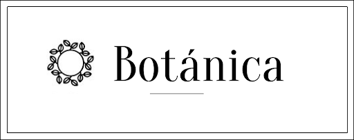
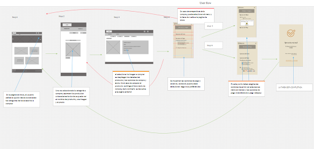
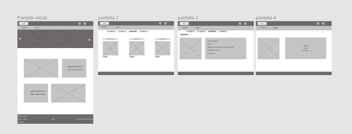

Entregarles a los usuarios inversionistas una herramienta que sea accesible y les permimta facilita el proceso de inversión.
Duración: 3 Semanas
El Cliente: Cumplo
Cumplo es una empresa de Crowdfunding y Lending que se dedica a ser un representante e intermediario de las pymes con inversionistas para que estas puedan conseguir créditos con diferentes propósitos. Está enfocada en ser una red y vitrina de posibilidades de inversión donde se regula el exceso de gastos para las pymes a través de inversionistas independientes con una tasa justa.
Roles: Investigación centrada en el usuario, Diseño de interacción, Prototipado.
Herramientas: Lápiz y papel, Post-it, Google Forms, Google Drive, Trello, Figma
Metodología: Imagen.
Según un estudio realizado por Fintech Radar Chile en el año 2016, se lograron detectar 56 Startups Fintech de las cuales se pudo identificar que aproximadamente un 4% del total de la industria se dedica a Lending (préstamos), lo que significa que es una industria que no ha tenido una popularidad excesiva en los años previos.
imagen
Se realizar un Benchmark donde a través del estudio de la competencia (7 empresas de la competencia) hemos podido darnos cuenta de los siguientes aprendizajes:
Se realiza entrevista a inversionista de Cumplo los cuales nos indican:
Imagen
imagen del user
Se realizó un Customer Journey Map que nos permitió identificar los siguientes puntos de dolores y oportunidades:
Puntos de dolor más críticos:
Oportunidades encontradas a partir de los puntos de dolores:
imagen del customer
Por último y para dar refuerzo a la investigación se realizó un testeo de usabilidad al sitio actual a un inversionista promedio que no había ingresado al sitio jamás. De este testeo se han podido sacar las siguientes conclusiones:
Posterior a la investigación realizada se concluye que los usuarios necesitan tener cubiertos otros aspectos que hagan que su flujo de inversión sea más simple y amigable en ejecución. Por eso se ha decidido realizar una Progressive Web App que vaya enfocada principalmente a la educación financiera y al historial del inversionista
Las Progressive web app son sitios web que tienen la capacidad de tener un acceso directo desde la pantalla de inicio del teléfono al sitio mismo. Responden igual que un sitio web con la diferencia que cargan y responden más rápido que un sitio normal responsivo.
A partir de los insights que hemos realizado al hacer la síntesis, hemos identificados los siguientes HMW
foto
A partir de las preguntas formuladas en el How Might We se nos ha hecho más simple generar un Brainstorming (lluvia de ideas) del cual sacamos ideas para plasmar a nuestro prototipo.
Foto
Para lograr reorganizar de una manera más apropiada y cómoda para los usuarios la arquitectura de información y el contenido del sitio se ha realizado un sitemap con la jerarquía de contenido que se espera lograr en el desarrollo del proyecto.
Foto
Posterior a la realización del Sitemap se han creado Sketches de todas las pantallas para entender mejor la organización y el flujo de uso del sitio.
Foto
Se han realizado Wireframes con la ubicación del contenido más detallado y definido.
Foto
Para poder entender mejor el flujo de uso de el sitio a través del punto de vista de los usuarios hemos creado un User Wireflow donde se puede ver a través de pantallas simples el proceso de inversión.
Imagen
Se realizo un prototipo de alta fidelidad aplicando estilos y diseño visual e interacciones, con un flujo principal de inversión y un flujo de desarrollo secundario de entrega de información básica
Foto
Se realizó testeos de usabilidad a la propuesta de valor realizada para la plataforma de Cumplo específicamente al flujo para realizar una inversión. Este testeo se ha realizado a cuatro personas que no son clientes de Cumplo pero tienen conocimientos sobre finanzas e inversiones de los caules se obtienen los siguientes aprendizajes:
A partir de los aprendizajes descubiertos con los testeos de usabilidad realizados hemos podido iterar en el prototipo y mejorar en los siguientes aspectos
Video / protipo de figma


“Yrlanda hizo un trabajo burde lo carteluo,la menol se desplaza seriamente por la pista, y anda con chiguireo, es un sendo beta”
— La menol PRAN de Tocoron